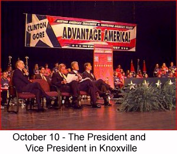
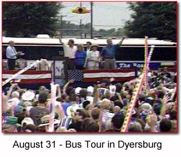

On the Horizon


As we head into the final days
of the campaign, we need your help
energizing your community to
GET OUT THE VOTE!Call the Clinton/Gore office number
below to volunteer.Tennessee Highlights
October 27 - The President's Remarks in Nashville
October 10 - The President and Vice President
in Knoxville to announce Internet InitiativeAugust 31 - The "On the Road to the 21st Century"
Bus Tour Rolls in to Dyersburg, TN.Tennesse volunteer Esther Wright
is profiled as a Volunteer of the WeekNashville resident Bryan Lewellen
created a multimedia presentationClinton-Gore '96 Headquarters
1808 West End Avenue
Suite 600
Nashville, TN 37203Phone: 615-320-3889
Fax: 615-320-3898
State Director: Bill Purcell
Tennessee Democratic Coordinated Campaign
1808 West End Avenue
Suite 600
Nashville, TN 37203Phone: 615-329-2001
Fax: 615-329-2640
The Coordinated Campaign is a distinct entity, directed by the Democratic National Party and the State Democratic Parties, and designed to elect Democrats to all levels of office.
Paid for by Clinton/Gore ’96 General Election Committee, Inc.